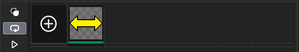
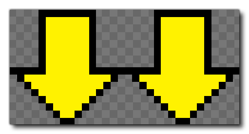
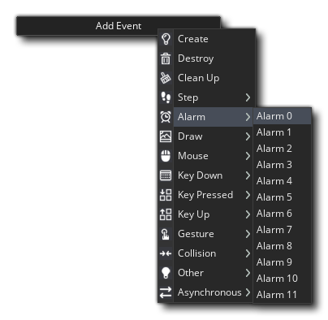

The way our BreakThrough game is right now, you could probably consider it finished, and it is to a certain extent, but it's missing one final thing to make it into a "proper" BreakThrough game... powerups! So we're going to add them now.
To start with, create a new sprite and set the size to 32 width and 16 height and call it "spr_Powers". Open the sprite in the Image Editor and draw two arrows, something like this:

We're going to add another image to this sprite to be used in a second powerup type. For that click the large "plus" icon to create another frame: 
The next frame should have two arrows pointing down, something like this: 
Now create a new object and call it "obj_PowerUp". Assign it the sprite we've just made, then add a Create Event with the following code:
/// @description Init Vars
image_index = choose(0, 1); // Choose which type of powerup it will be
image_speed = 0; // Set the sprite to not animate
speed = 5; // Set the speed
direction = 270; // set the direction
This code will select a sprite frame to use for the powerup and set it moving down the screen. We need to remove the instance from the game if it is no longer visible, so the next thing to add is an Outside Room event (from the Other category) with this code:
/// @description Clean Up
instance_destroy();
Finally, we need to add a Collision Event with the object "obj_Bat". In this event we're going to have the game change based on the image index (frame) of the sprite that the powerup uses. In this case, frame 0 will make the player bat larger, and frame 1 will slow the ball down. The code to do this is as follows (and should be added to the event):
/// @description Powerup!
switch(image_index) // Check to see what frame is being used by the sprite
{
case 0: // Make the player bat bigger
with (obj_Bat)
{
image_xscale = 1.5;
alarm[0] = room_speed * 10;
}
break;
case 1: // Slow down the ball
with (obj_Ball)
{
speed = spd;
}
break;
}
instance_destroy();
With this code, if the powerup uses frame 0 then we set the player controlled Bat object to scale along the x-axis (stretching it), or if the frame is 1 we set the ball speed back to it's original speed. Note that if it's frame 0 we also call an Alarm Event in the player object. This event won't run immediately, but will instead count down for 10 seconds before running (our game has an FPS of 60, so room_speed equals 1 second of time).
Let's add that Alarm event now, so open up the object "obj_Bat" and add an Alarm[0] event: 
And here we place this code:
/// @description Reset Size
image_xscale = 1;
The last thing we need to do for the game to be finished is have the Brick objects spawn one of the powerups. So open up the object "obj_Brick" and give it a Destroy Event with the following code:
/// @description Create Powerup
if irandom(2) == 0
{
instance_create_layer(x, y, layer, obj_PowerUp);
}
Press the Play  button now to see the game running... And then give yourself a pat on the back for having created a complete game in virtually no time!
button now to see the game running... And then give yourself a pat on the back for having created a complete game in virtually no time!